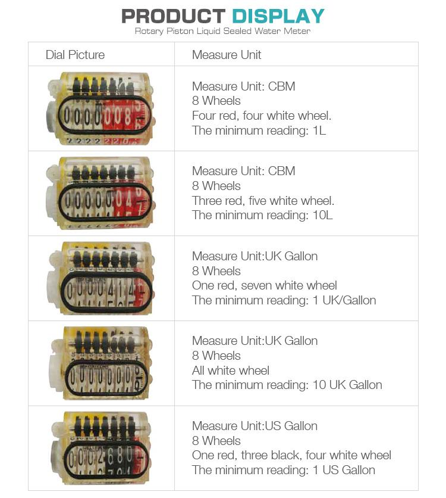

E-mail:
info@sh-meters.comCall Us:
+86 13131984716
The home type volumetric water meter measures the volume of the actual fluid passing through the water meter.Volumetric water meters are more accurate than speed meters.
The home type volumetric water meter measures the volume of the actual fluid passing through the water meter.Volumetric water meters are more accurate than speed meters. The velocity meter measurement error will have an error of ±2% depending on the fluid velocity, while the volumetric water meter error can be controlled to ±0.5% or lower.

Size | 1/2 inch~1+1/2inch | Pulse output | Reed Switch |
Feature | Rotary\Horizontal | Material | Brass\Plastic |
Dial | Dry Dial | Standard | ISO 4064 Class B |
Application | Household|Home | Water Type | Cold |
Advantage:
· Mechanism use of high-quality material to ensure a stable characteristic.
· Accurate measurement with conformity to ISO 4064 class C.
· On request, the series can be equipped with a kind of remote transmission device.
Application:
volumetric piston water meter is used to measure the total amount of cold drinking water consumed by households or household units.
Installation requirements:
The meter should be mounted in a vertical or horizontal position with the register facing up.
The meter should always be filled with water during operation.
 Liquid Sealed Multi Jet Impulse Output Water Meter
Liquid Sealed Multi Jet Impulse Output Water Meter Woltman Bulk Water Meters
Woltman Bulk Water Meters Smart AMR LoRa Remote Wireless Valve Control Water M...
Smart AMR LoRa Remote Wireless Valve Control Water M... Class C M-bus Wired Ultrasonic Bulk Water Meter
Class C M-bus Wired Ultrasonic Bulk Water Meter Water Meter Calibration Test Bench
Water Meter Calibration Test Bench